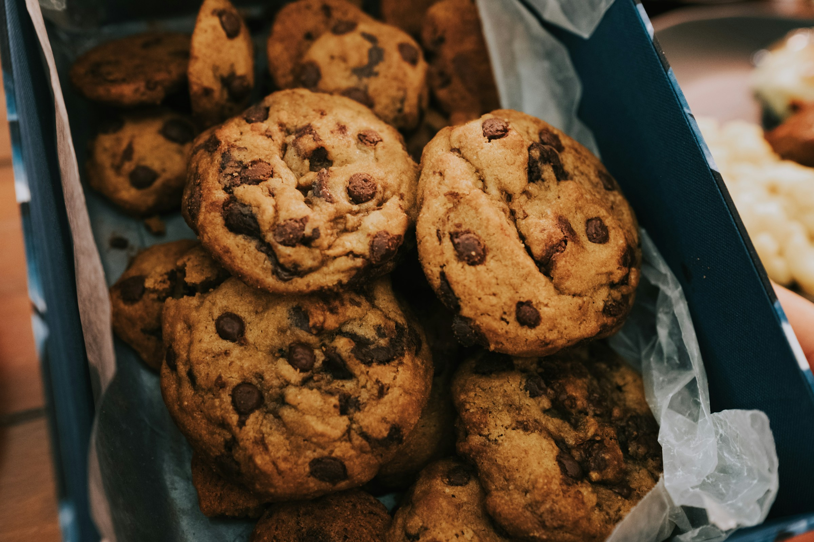

Triple Chocolate Chunk Cookies

Description:
Satisfy your chocolate cravings with these decadent triple chocolate chunk cookies, loaded with rich cocoa flavor and chunks of melted chocolate in every bite.
Ingredients
- 1 cup (2 sticks) unsalted butter, softened
- 1 cup granulated sugar
- 1 cup packed brown sugar
- 2 large eggs
- 1 teaspoon vanilla extract
- 2 cups all-purpose flour
- 3/4 cup unsweetened cocoa powder
- 1 teaspoon baking soda
- 1/2 teaspoon salt
- 1 cup semi-sweet chocolate chips
- 1 cup milk chocolate chunks
- 1 cup white chocolate chunks
Steps:
- Preheat your oven to 350°F (175°C). Line baking sheets with parchment paper or silicone baking mats.
- In a large mixing bowl, cream together the softened unsalted butter, granulated sugar, and brown sugar until light and fluffy.
- Beat in the eggs, one at a time, followed by the vanilla extract, until well combined.
- In a separate bowl, sift together the all-purpose flour, unsweetened cocoa powder, baking soda, and salt.
- Gradually add the dry ingredients to the wet ingredients, mixing until just combined.
- Fold in the semi-sweet chocolate chips, milk chocolate chunks, and white chocolate chunks until evenly distributed throughout the cookie dough.
- Using a cookie scoop or spoon, drop rounded tablespoons of dough onto the prepared baking sheets, spacing them about 2 inches apart.
- Bake in the preheated oven for 10-12 minutes, or until the cookies are set around the edges but still slightly soft in the center.
- Allow the cookies to cool on the baking sheets for a few minutes before transferring them to wire racks to cool completely.
- Enjoy these triple chocolate chunk cookies with a glass of cold milk for the ultimate chocolate indulgence!
Links
Home
Spaghetti Bolognese